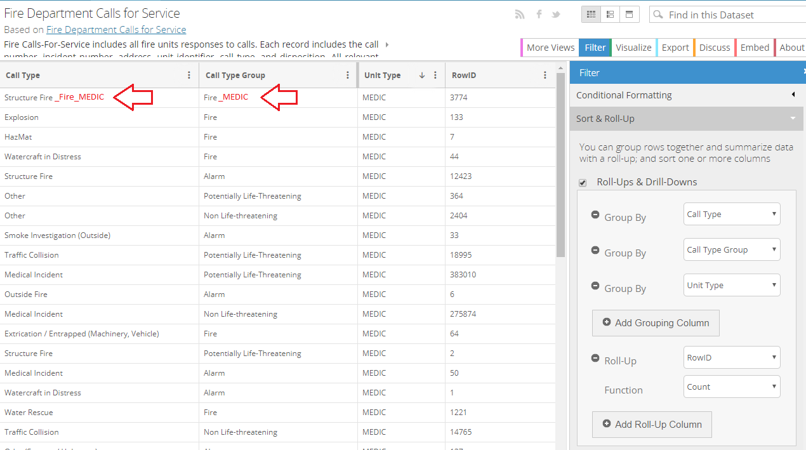

I used the publicly-available SF Fire department Dataset,
group by Unit Type, Call type Group and Call type and to to arrive at a total of 150 records.
First, I went onto the Fire Department Calls for Service dataset and grouped columns by Unit Type,
then Call Type Group, then Call Type hierarchically, using the number of rows as the measure.
Rows with null for any of these columns were discarded prior to grouping.
Next, I took the 50 categories
with the highest count and discarded the remaining groups.
Finally, I converted the category hierarchy into a path (using underscore as delimiter) so that d3.stratify() can treat each row as a unique node when building the hierarchy. The child-parent relationships exist from Call Type to Call Type Group, as well as Call Type Group to Unit Type. All the Unit Types were also assigned a placeholder origin node to form the root of the tree.

Encoding
The hierarchical format is like this: under the root, first layer is Unit Type, the second layer is Call type group and the third layer is Call Type Then
under different incident type, it shows total incident numbers.
Interactivity
Hover over each cell in the tree map to see the detail in full.
Conclusion
From this visualization, we can see that structure fire, medical incident, traffic collision are the most incident type that Fire Department got for 2019.
I think maybe from this visualization, we can help people and Fire Department to choose which incidents should be more careful in the daily life.
My name is Zhenzhen Wang. I come from China. I feel really lucky that I can study computer science in USF. I have three courses this semester: data structures, C, and data visualization. It's full of challenges but I am excited to learn all of them.
Because I think these courses will help me build good foundation for further studying.